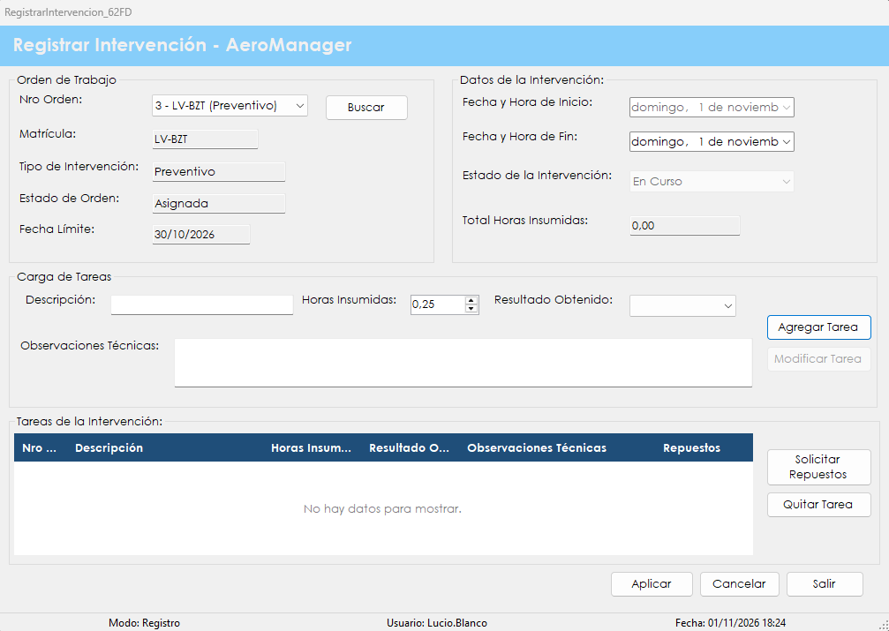

Es la pantalla del técnico: inicia el trabajo sobre una orden asignada, registra las tareas realizadas y cierra la intervención.
Una orden de trabajo dice qué hay que hacer; la intervención deja asentado lo que realmente se hizo. Cada tarea queda registrada con su descripción, las horas insumidas, el resultado obtenido y las observaciones técnicas, y el sistema suma las horas para obtener el total del trabajo.
La intervención tiene dos momentos. Al iniciarla, el sistema toma la fecha y hora de inicio y pasa la aeronave a En Mantenimiento. Al cerrarla, la intervención queda Finalizada, la orden pasa a Ejecutada y el trabajo queda a la espera de un inspector en Certificar intervención.
No hace falta terminar todo en una sola sesión: una intervención en curso se puede dejar y retomar más adelante.
Desde el menú principal, en Mantenimiento de Aeronaves › Registrar Intervención. La opción aparece si el rol del usuario incluye la patente correspondiente. La lista de órdenes muestra solamente las asignadas al usuario que inició la sesión.

| Control | Para qué se usa |
|---|---|
| Nro Orden | Lista de las órdenes asignadas al usuario, con número, matrícula y tipo. |
| Buscar | Inicia la intervención de la orden elegida o retoma la que está en curso. |
| Datos de la orden | Matrícula, Tipo de Intervención, Estado de Orden y Fecha Límite. Son informativos. |
| Fecha y Hora de Inicio | Se completa al iniciar la intervención y no se puede cambiar. |
| Fecha y Hora de Fin | Momento en que terminó el trabajo. El sistema propone el actual. |
| Estado de la Intervención | Muestra En Curso o Finalizada. Lo maneja el sistema. |
| Total Horas Insumidas | Suma de las horas de todas las tareas. |
| Descripción | Qué se hizo en la tarea. Es obligatoria. |
| Horas Insumidas | Tiempo dedicado a la tarea. Avanza de a un cuarto de hora. |
| Resultado Obtenido | Conforme, No Conforme o Pendiente. Es obligatorio. |
| Observaciones Técnicas | Comentarios adicionales sobre la tarea. Son opcionales. |
| Agregar Tarea | Guarda una tarea nueva. También se activa con la tecla Enter. |
| Modificar Tarea | Se habilita al elegir una tarea y guarda los cambios hechos sobre ella. |
| Tareas de la Intervención | Grilla con Nro Tarea, Descripción, Horas Insumidas, Resultado Obtenido, Observaciones Técnicas y Repuestos. La última columna muestra un guion si no hay pedidos, o bien Solicitado o Recibido. |
| Solicitar Repuestos | Abre Solicitar repuesto para la tarea elegida. |
| Quitar Tarea | Elimina la tarea elegida, siempre que no tenga repuestos solicitados. |
| Aplicar | Cierra la intervención. |
| Cancelar | Deja la intervención en curso y limpia la pantalla. Las tareas cargadas se conservan. |
| Salir | Cierra la pantalla. También se activa con la tecla Esc. |
Atención. Una intervención cerrada no se puede modificar: ya no se pueden agregar ni quitar tareas.
| Situación | Qué significa y qué hacer |
|---|---|
| "No tiene órdenes de trabajo asignadas pendientes de ejecución." | No hay órdenes a nombre del usuario. Si debería tener una, hay que revisar el técnico elegido en Generar orden de trabajo. |
| "Error al recuperar las órdenes de trabajo:" seguido del motivo | No se pudo cargar la lista. Después de los dos puntos se indica la causa técnica. |
| "Debe seleccionar una orden de trabajo." | Se presionó Buscar sin elegir una orden. |
| "¿Iniciar la intervención de la orden" seguido del número, "(aeronave" seguido de la matrícula, ")? Se registrará la fecha y hora de inicio y la aeronave pasará a En Mantenimiento." | Conviene confirmar solamente al empezar el trabajo real, porque la fecha de inicio no se puede cambiar después. |
| "La intervención Nro" seguido del número, "se inició, pero el estado de la aeronave no se pudo actualizar a En Mantenimiento." | Se puede seguir trabajando, pero hay que avisarle al administrador para revisar el estado de la aeronave. |
| "Error al iniciar la intervención:" seguido del motivo | No se pudo abrir la intervención. Después de los dos puntos se indica la causa técnica. |
| "Debe completar la descripción y el resultado obtenido de la tarea." | Faltan datos obligatorios de la tarea. |
| "Las horas insumidas deben ser un valor mayor que cero." | Hay que indicar el tiempo dedicado a la tarea. |
| "Error al registrar la tarea:" seguido del motivo | La tarea no se guardó. Después de los dos puntos se indica la causa técnica. |
| "Debe seleccionar una tarea de la grilla." | Hay que hacer clic en una tarea antes de usar el botón. |
| "No se puede quitar una tarea que tiene repuestos solicitados." | Una tarea con pedidos de repuestos, aunque ya estén recibidos, no se puede eliminar. |
| "¿Quitar la tarea Nro" seguido del número y la descripción, "? Esta acción no se puede deshacer." | Con Sí la tarea se elimina definitivamente. |
| "Error al quitar la tarea:" seguido del motivo | La tarea no se eliminó. Después de los dos puntos se indica la causa técnica. |
| "Error al recuperar las tareas de la intervención:" seguido del motivo | No se pudo actualizar la lista de tareas. Después de los dos puntos se indica la causa técnica. |
| "No se pudo modificar la tarea. El registro pudo haber sido modificado por otro usuario." | Conviene volver a seleccionar la tarea y repetir el cambio. |
| "Error al modificar la tarea:" seguido del motivo | Los cambios no se guardaron. Después de los dos puntos se indica la causa técnica. |
| "Debe registrar al menos una tarea antes de cerrar la intervención." | No se puede cerrar una intervención sin tareas. |
| "La fecha y hora de fin no puede ser anterior a la de inicio." | Hay que corregir Fecha y Hora de Fin. |
| "La fecha y hora de fin no puede ser posterior al momento actual: no se puede cerrar una intervención que todavía no terminó." | La fecha elegida es futura. Hay que corregirla o esperar a terminar el trabajo. |
| "¿Cerrar la intervención Nro" seguido del número, "de la orden" seguido del número, "(aeronave" seguido de la matrícula, ")? Una vez cerrada no se podrán agregar ni quitar tareas." | Con Sí se cierra el trabajo; con No se puede seguir cargando tareas. |
| "No se puede cerrar la intervención: hay tareas con resultado Pendiente. Complételas o quítelas antes de cerrar." | Hay que cambiar el resultado de esas tareas o quitarlas. |
| "No se puede cerrar la intervención: hay repuestos solicitados que todavía no se recibieron. Registre su recepción antes de cerrar." | Hay que registrar la llegada de esos repuestos en Solicitar repuesto. |
| "Intervención registrada correctamente. Nro de Intervención:" seguido del número, ". Total de horas insumidas:" seguido del total | El cierre se completó y el trabajo queda pendiente de certificación. |
| "Error al cerrar la intervención:" seguido del motivo | El cierre no se completó. Después de los dos puntos se indica la causa técnica. |
| "La intervención queda en estado En Curso y puede retomarse más adelante." | Aparece al presionar Cancelar. Para continuar, hay que volver a elegir la orden y presionar Buscar. |
| "El registro fue modificado o ya no existe. Vuelva a buscarlo e intente nuevamente." | La orden o la intervención cambió mientras se trabajaba. Hay que buscarla de nuevo. |
| "La operación se registró correctamente, pero no pudo asentarse en la Bitácora:" seguido del motivo | La intervención se cerró, pero el evento no quedó en la bitácora. Después de los dos puntos se muestra el motivo técnico. Conviene avisarle al administrador. |